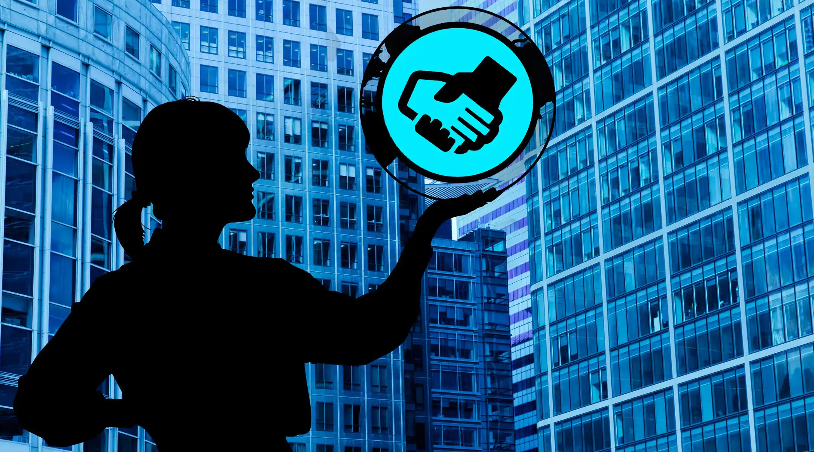

L'economia circular és un model de producció i consum que implica compartir, llogar, reutilitzar, reparar, renovar i reciclar materials i productes existents tantes vegades com sigui possible per crear un valor afegit. D'aquesta manera, s'allarga el cicle de vida dels productes.
“No existeix sostenibilitat sense una gestió eficient dels recursos.” — Dra. Isabel Moreno
Aquest model contrasta amb l'economia lineal tradicional, que es basa en el patró "usar i llençar" i requereix grans quantitats de materials i energia barats i fàcilment accessibles. L'obsolescència programada, contra la qual el Parlament Europeu demana mesures, també forma part d'aquest model.

Reutilitzar i reciclar productes ajuda a alentir l'ús de recursos naturals, redueix la disrupció del paisatge i l'hàbitat i ajuda a limitar la pèrdua de biodiversitat. Un altre benefici de l'economia circular és la reducció de les emissions anuals totals de gasos amb efecte d'hivernacle.
La transició cap a una economia circular pot generar beneficis ambientals, econòmics i socials, incloent la creació de llocs de treball, la innovació i la competitivitat empresarial.
- Reducció de residus: Clau per a la sostenibilitat.
- Reutilització: Allargar la vida útil dels productes.
- Reciclatge: Minimitzar l'impacte ambiental.